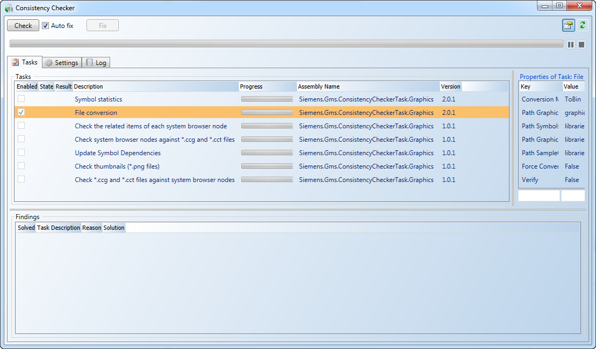
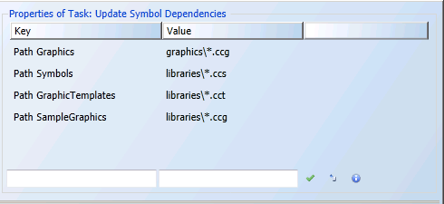
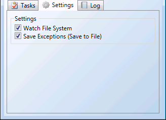
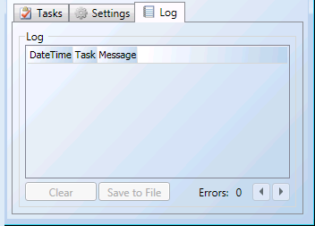

Consistency Checker Diagnostics Tool
The Consistency Checker is an engineering, diagnostic tool that is accessible from the File menu in the Graphics Editor.

Consistency Checker | |
Field | Description |
Check | Clears any existing error messages and runs any check marked tasks. |
Auto Fix | Automatically fixes any errors found after a task has been run. |
Fix | Manually initiate a fix on any selected errors. |
| Display or hides the Properties of Task section in the Tasks tab. NOTE: Only displays when the Tasks tab is selected. |
| Load all tasks from all task files. |
Progress Bar | Displays a green moving bar when tasks are executed. You can Pause or Stop All a task, as needed. |


Tasks Tab
Tasks Tab | |
Task section | |
Field | Description |
Enabled | Enables the task. |
State | Displays the current state of the task.
|
Result | Displays the result of the task.
|
Description | Displays a brief description of the task. |
Progress | When a task is active, displays the progress of the task. - Pause task - Resume task |
Assembly Name | Displays the name of the task file (.DLL) |
Version | Displays the version of the task assembly. |
Findings section | |
Field | Description |
Solved | Displays a checkmark if the issue is resolved. |
Task Description | Displays the name and description of the task. |
Reason | Displays the reason why the issue was added. |
Solution | Displays what the solution is to fix the issue. |
 - Completed Successfully
- Completed Successfully - Completed with Findings
- Completed with Findings - Completed with Errors
- Completed with Errors - Canceled
- Canceled - Failed
- Failed

Property of Task Section: Description varies according to task selected | |
Field | Description |
Key | Displays the property path. |
Value | Displays the property value. |
Input fields | Allows you to enter text to add a new key or value, respectively. Or, modify an already selected task property. When you enter a name of a new property, it must be a unique name. |
| Applies the changes made to the Key and Value fields or adds the new property. |
| Restores the Key and Value fields to their default settings. |
| Displays a description of the highlighted property. |


Settings Tab

Settings Tab | |
Field | Description |
Watch File System | When checked, the Consistency Checker watches the Task Directory for newly added task .DLL’s, upon detection, the .DLL is then automatically loaded. |
Save Exceptions (Save to File) | Exceptions are written and saved in the Export log file. |
Log Tab

Log Tab | |
Field | Description |
DateTime | Display the date and time the log entry was noted. |
Task | Display the name and description of the task. |
Message | Display any status or error messages associated with the task. NOTE: In the event of an error message, placing the mouse over the message may display additional information about the issue. |
Clear | Clear the log of all text. |
Save to file | Save the log content to a text file. |
Errors | Display the number of errors found and allows you to use the arrow buttons to scroll through the error messages. |
Related Topics
For background information, see Consistency Checker Diagnostic Tool Tasks.
For related procedures, see Running the Consistency Checker Diagnostic Tool.